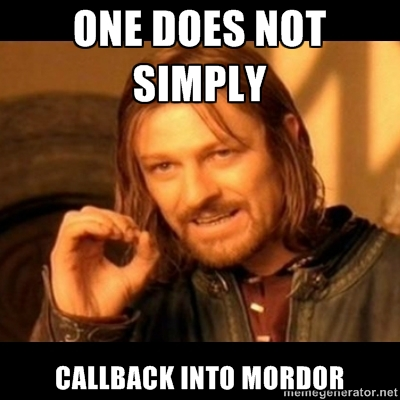

Follow me on Twitter
Follow me on github
I write code at CareZone.com in Seattle, I am the co-host of the Ruby 5, you may have used one of the gems I work on (if you are using Cucumber, try Turnip), I have been using Ruby and Rails since 2008 and JavaScript since 1996!
Why JavaScript client-side frameworks?
Rails 1.0 was released on 2005/12/13 What is driving this?
Everybody is doing it
Who uses jQuery, Prototype, or similar? Who uses Backbone.js, Ember.js, or similar? These frameworks are seeing lots of use -- apps are going beyond unobtrusive
Your JavaScript is out of control
.notes We always used JavaScript, now we have a lot more if it! Web-apps are evolving into full featured clients More features == more code
Response time matters
responsiveness is a basic user interface design rule that's dictated by human needs, not by individual technologies
Jakob Nielsen's Alertbox, June 21, 2010
A little UJS to close the flash box is not going to cut it.
Backbone.js
One of the original JavaScript MVC frameworks, written by Jeremey Ashkenas. Backbone is about 2 years old and has a very active community. And, unusually, without many opinions. This lack of opinions definitely makes it harder for the novice to jump-in. Really a very useful library with a thin framework on top. And most apps will need more You will need more, and this is a good thing.
25 things you need to know about Backbone and Rails
There are many introductory tutorials and screencasts available for Backbone. You may not have read or seen one yet. That is OK! This talk is about 25 things you will need to know after the tutorial.
1. Stop using JavaScript
JavaScript might be one of the most successful runtimes in history, available on all sorts of devices, and really a core part of the Web. And it is powerful, supporing OOP and functional programming as you see fit It is easy to gets started with a rich eco-system of libraries and plugins. All your favorite 'WOW' UIs are using JavaScript So...

This... Douglas Crockford's JS:TGP Who has read this book? If you have not, it would be worth your while to do so
Use CoffeeScript
Ruby-ish syntax
Compiles to JavaScript
Available by default in Rails
CoffeeScipt is an alternative, no scratch that, better syntax for JavaScript. It was written by Jeremey Ashkenas and the generates code that adheres to the TGP. CoffeeScript also some nice features baked right into the language. It has a nice syntax that is clean and terse If you take one thing away from this talk: use CoffeeScript
2. MVC
Everyone is familiar with MVC from Rails. MVC actually originated from a Smalltalk background and user interface widgets - there is very much a parallel to the JavaScript we are writing today MVC as a pattern organizes your code around three concepts The Model represents the application's state The View displays the apllications's state to the user The Controller interprets the actions of the user and acts to on the application state The core of MVC is event handling based on the observer pattern. The observer pattern allows a subject to notify a list of dependents of state changes.
This is not Rails MVC
Rails has its own opinion about MVC. One difference from the original is that the Model != Persistence, when we talk about MVC on the client side the Model often does not even persist.
Backbone is not exactly MVC either
So, Backbone does have an opinion, it is event-driven. Backbone is designed around events. That means that although we do not have a perfect MVC match, we can discuss Backbone in terms of MVC. There are four core classes in Backbone: The Model and Collection classes hold your application state The View class displays the application state The View class also interprets the user's actions and acts on the application state The Router (indirectly via the Browser location bar) also interprets the user's actions and acts on the application state
3. Backbone Models are not Rails Models
Avoid thinking of Backbone Models like ActiveRecord Models. Yes, Backbone Models support simple persistence via ajax out of the box but think of Backbone Models as a data bag with event support, this is really useful when creating your dynamic UI
4. Backbone Models have no validations
There is support for validation built-in, provided by overriding the validate method. I recommend a Backbone plugin
Backbone.Validations
https://github.com/n-time/backbone.validations
class App.FormView extends App.View
errors: ->
required: 'is required'
errorMessageFor: (key, validation) ->
@errors()[key]?[validation] || @errors()[validation]
class App.Views.Movie extends App.FormView
errors: ->
_.extend super,
name:
required: 'Please enter the name of the movie'
class App.Models.Movie extends App.Model
validate:
name:
required: trueBackbone.Validations by Neal Stewart Nice declartive validations with basic validations built-in, and you can add your own. You have to add your own support for error messages
5. Backbone Collections
Backbone does not have finder class methods on its Models Models are aggregated by a Collection. Models can be added to a Collection one at a time or in bulk. When adding, a collection will recognize duplicate models.
Sort your collections
- Specify the comparator
- When you add an item, look at options.index
- When you remove an item, look at options.index
You can use either sortBy 1-arg or sort 2-arg for the comparator, The Collection will stay in sorted order as you manipulate it
6. Backbone Views are not templates
Backbone views are code that is responisible for air-quote rendering air-quote the view. You should use templates with your views, and each view instance should render a template.
7. Backbone Views do not render
Backbone does not force you to use templates, you can bind views directly to HTML on the page served by Rails. Or you can use templates, but you have to render them yourself (we will come back to this) Underscore.js ships with erb-like templating, or...
8. Use Mustache
Mustache is a logic-less templating system inspired by ctemplates If you really need helpers, try handlebars.js a superset of Mustache
Mustache Example
templates/conversations/conversation.hamstache
.count
%a(class='conversation' href='')
{{messageCount}}
{{#newMessageCount}}
.new_count
({{newMessageCount}})
{{/newMessageCount}}
.description
%a(class='conversation' href='')
{{between}}
%span.meta
—
{{> time}}
%ul.actions
{{> mute_actions}}
Haml + Mustache == HAMSTACHE! Mustache supports iteration, conditional sections, and partials
9. Use the Rails asset pipeline
http://guides.rubyonrails.org/asset_pipeline.html
Precompilation and compression of all your JS including templates for faster rendering
Precompile your templates!
https://github.com/leshill/hogan_assets
You can precompile your Mustache templates to minimize client-side render times. Hogan is a Mustache template compiler from Twitter. hogan_assets uses Hogan.js to precompile all your templates in the asset pipeline They are served to the browser ready to render for SPEED!
10. Organize your code
Backbone makes no assumption about the layout of your code. Namespaces and file organization are up to you.
Namespace your App
main.js.coffee
window.App =
Collections: {}
Models: {}
Presenters: {}
Views: {}
$(->
# Start your app here
)Create a namespace for your App, App is a fine choice. Copy the Rails naming convention Or not, just use a namespace, you will thank me later
Presenters?
Presenters are not a part of Backbone, more on them later
File Organization
app/
assets/
javascripts/
app/
collections/
{ your collections here }
models/
{ your models here }
presenters/
{ your presenters here }
views/
posts/
{ your views here }
templates
posts/
{ your mustache templates here}
Mirror the namespace in the file organization. Note that templates do not need to be namespaced, but should be organized similarly to your views
11. View binding to DOM events
class App.Views.Example extends App.View
events:
'click a.cancel': 'close'
close: (event) ->
event?.preventDefault()
@hide()Backbone comes with two types of event support baked in. This is the events map. The events map works like jQuery's on events-map. Specify a DOM event (cannot use focus/blur or change/submit/reset in IE) and a selector as the key and a callback method as the value Callback! Take a look at the first line of close(), a nice feature of CS is the existential operator, which can soak up nulls similar to the andand gem.
12. Binding to Backbone events
class App.Views.Example extends App.View
initialize: (options) ->
super
@model.on('change', @renderAndHighlight, this)
renderAndHighlight: ->
@render()
@$el.effect('highlight', 'slow')The second type of event support is Backbone.Events. The Backbone classes: Model, Collection, View, Router, all fire specific events and your extensions can fire custom events. For example, when an attribute value changes on a model, Backbone.Model will fire a 'change' event
13. Backbone.Events
callback: (obj, value) ->
# Do something
# Start listening
@obj.on('custom', callback, this)
# Start listening to any event
@obj.on('all', callback, this)
# Stop listening
@obj.off('custom', callback)
# Trigger the event
@obj.trigger('custom', this, value)The Backbone.Events API is 3 simple methods, on, off, and trigger. And you can mix Backbone.Events directly into your own classes.
14. Other types of Callbacks
# Using $.ajax
jqxhr = $.ajax
url: '/conversations/unread'
dataType: 'json'
jqxhr.done @_resync
# Or using jQuery plugins
@$('form').fileupload
url: @uploadUrl()
dataType: 'json'
add: @queueFile
done: @uploadComplete
fail: @uploadFailed
send: @uploadStarted
always: @uploadDone
replaceFileInput: falseIn JavaScript everything uses callbacks. For example, the event loop, or $.ajax.
Callbacks and this
Everyone is bitten by
thisJavaScript callbacks are invoked with a
thisparameter
There is one pitfall with JavaScript callbacks. What is this? You
might naively expect it to be this at the point the callback is defined.

JavaScript closures are lexically scoped so all the names in scope at
the point the callback is defined remain available.
All the names except, of course, this. It turns out that this is
controlled by the caller of the callback, and is passed as the first argument
to apply() or call() when the callback is invoked.
Do not do this
# Contrived example!
that = this
callback = (obj, value) ->
that.do_something()
# Start listening
@obj.on('custom', callback)Knowing this, resist the temptation to work around it by saving this to that.
Or self :)
15. Event context: View DOM Events
class App.Views.Example extends App.View
events:
'click a.cancel': 'close'
close: (event) ->
# What is `this` inside the callback?
alert(this)
# Yes!When using View.events, Backbone sets this for you to the View.
16. Event context: Backbone.Events
class App.Views.Example extends App.View
initialize: (options) ->
super
@model.on('change', @renderAndHighlight)
renderAndHighlight: ->
# What is `this` inside the callback?
alert(this)
# WAT?!When not explicitly set as the last parameter, this is set to the
triggering object or @model in this case
Event context: Backbone.Events specifying this
class App.Views.Example extends App.View
initialize: (options) ->
super
@model.on('change', @renderAndHighlight, this)
renderAndHighlight: ->
# What is `this` inside the callback?
alert(this)
# High five!The last parameter to on is the context for the callback, when trigger
calls your callback, it will set this to the explicitly passed in context
17. The Fat Arrow
=> is CoffeeScript binding magic!
getUnread: ->
jqxhr = $.ajax
url: '/conversations/unread'
dataType: 'json'
jqxhr.done @_resync
_resync: (data, status, jqxhr) =>
# What is `this` inside the callback?
alert(this)
# Awwww Yeeaaa!The fat arrow binds your method to the defining object, even if it was invoked as a callback, very useful and worth looking at how CoffeeScript does this to understand why it works
This is one of my favorite CoffeeScript features!
WARNING!
Do not use => EVERYWHERE!
If you do, I will hunt you down, sit down at your keyboard, and type 'gem uninstall coffeescript' Seriously, using it everywhere is a code-smell. The operator has a specific, very-useful, semantic meaning.
18. Learn and use Underscore.js
Essential support library for JS. You should review all of its functionality, there are 75-ish methods. For example _.bind if you have a situation where you cannot use the fat arrow
19. Write your code with events!
class App.Collection extends Backbone.Collection
selectModel: (model_or_id) ->
model = if _.isObject(model_or_id)
@getByCid(model_or_id.cid)
else
@get(model_or_id)
@trigger('select', model)Really! Events are the heart of MVC and JavaScript in the browser is already event-driven If you take another thing away from this talk: emit an event, do not call a method (let the observers figure it out!) REMEMBER: CoffeeScript good! Events good!
20. Rendering Mustache
class App.View extends Backbone.View
initialize: (options) ->
super
if @options.template?
@template = @options.template
html: (html) ->
@$el.html(html)
this
render: ->
if @template?
@html(@renderTemplate(@template, @renderContext(), {})))
this
renderContext: ->
@model.toJSON()
renderTemplate: (template, context, partials) ->
@_template(template).render context, partials
_template: (template) ->
HoganTemplates['templates/' + template]Back to rendering (from #7) Take this please. Use it. Improve it. You need something like this.
21. Presenters are a natural fit for Mustache
- Mustache is logic-less and without helpers
- Presenter sits between the model and the template
- Maintains the separation between the Model and View
Which brings us to Presenters! Mustache renders from a hash of names and values, Rails helper-like functionality has to happen before passing the hash to Mustache
Presenter wraps a model
class App.Presenter
constructor: (model) ->
@model = model
(@[key] = value unless @[key]?) for own key, value of @model.attributes
get: (name) ->
@model.get(name)
class App.Presenters.Movie extends App.Presenter
opening_weekend: ->
'$' + format '#,##0.00', @get('opening_weekend')Attributes are exposed directly through the Presenter, and helper like functionality is added to the presenter, for example formatting a number to currency
Rendering with a Presenter
class App.View extends Backbone.View
initialize: (options) ->
super
if @options.template?
@template = @options.template
if @options.presenter?
@presenter = @options.presenter
render: ->
if @template?
@html(@renderTemplate(@template, @renderContext(), {}))
this
renderContext: ->
if @presenter?
@presenter.apply this, [@model]
else
@model.toJSON()
renderTemplate: (template, context, partials) ->
@_template(template).render context, partials
_template: (template) ->
HoganTemplates['templates/' + template]Minor change in initialize and renderContext, et voila! Presenters! Notice the apply for @presenter?
22. Prefer configuration via code over properties
- Passed in as a callback
- Always set the context to the configured object
- Flexibility
Properties are easy, but often limit what is being done
Setting this parallels what we do with Ruby configuration objects
Configuring a CollectionView
class App.CollectionView extends App.View
initialize: (options) ->
super
@view = @options.view
add: (model, collection, options) ->
newView = @getView(model).show()
if options.index == 0
@container().prepend(newView.$el)
else
existingModel = @collection.at(options.index - 1)
existingView = @getView(existingModel)
existingView.$el.after(newView.$el)
@trigger('viewAdded', newView, model, options.index)
getView: (model) ->
unless view = @viewCache.get(model)
view = @view.apply this, [model]
@viewCache.add(view)
view
view = new App.CollectionView
collection: collection
el: $('#movie_list')
view: (model) ->
new App.Views.Movie
model: model
presenter: (model) ->
new App.Presenters.Movie(model)The child view is defined via a callback
23. Use deferreds!
if jqxhr = @model.save(attrs)
jqxhr.always (jqxhr, status) =>
$.rails.enableFormElements(@$('form'))
jqxhr.done (data, status, jqxhr) =>
@model = null
@clearErrors()
@clearForm()Model#save,#fetch and #destroy all return a jqxhr now
24. Rails controllers and single page apps
BackboneAndRails::Application.routes.draw do
get '/movies', to: 'movies#index'
get '/movies/new', to: 'movies#index'
get '/movies/:id', to: 'movies#index'
root to: 'movies#index'
endSupport links into the app Use the Router to show the appropriate UI, the Rails index page needs to provide all data necessary
The Backbone Router
- Updates the browser address bar
- Route events
- Completely optional
Route events can be used to manage visibility for secondary elements of the UI, for example only showing left hand nav component on detail views
25. It is just code
There is a lot of code being written for the client-side now. SOLID, design patterns, testing practices all apply
Questions?
Photo Credits
JavaScript the good parts http://anongallery.org/220/javascript-the-good-parts
Presenters? WAT? http://knowyourmeme.com/photos/275377-wat
One does not simply callback into Mordor http://memegenerator.net/instance/21487685
Awww Yeeaaa http://knowyourmeme.com/memes/aww-yea-guy